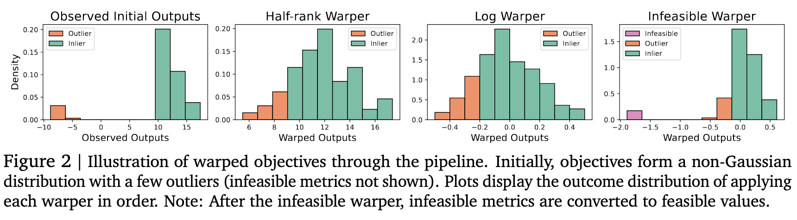

Thoughts on Google Vizier
Vizier, described in a recent paper from Google, is a black-box optimization algorithm deployed for “numerous research and production systems at Google”. Allegedly, this one algorithm works well on a wide range of settings (something which the “no-free-lunch-theorem” suggests might not be possible). In this post I provide my thoughts on what key design decisions likely make this algorithm work well.
NOTE: throughout this post I use the following acronyms:
- BO (Bayesian optimization)
- GP (Gaussian process)
- UCB (upper confidence bound)
- GA (genetic algorithm)
Summary of Vizier
Vizier is a Gaussian process Bayesan optimization (GP-BO) algorithm: a class of algorithms that I worked with a lot during my PhD. Formally, the algorithm seeks to optimize a function f(x). At every step, it fits a GP surrogate model to the data, then chooses a new point (or set of points) to evaluate by maximizing an acquisition function. I won’t give further details about GP-BO here, but if you are unfamiliar with this topic I suggest reading Chapter 1 of Roman Garnett’s textbook for a high level overview.1
What’s remarkable about Vizier is, frankly, how unremarkable it is. The algorithm does not depart from the general GP-BO paradigm. Furthermore, each part of the algorithm is pretty standard: for example, they use a GP with a Matern 5/2 kernel and the UCB acquisition function, rather than any of the fancy kernels or information-theoretic acquisition functions commonly seem in ML conference papers over the past decade. No individual component stands out as being particularly clever or groundbreaking. Instead, I think Vizier’s success comes from making standard parts work well together and using reasonable heuristics.
Walk-through of Vizier’s design
Input and output scaling: make the data fit the model, rather than choosing a model to fit the data
First, the input data is all normalized to be in the interval [0,1] in every dimension, optionally with logarithmic scaling. This has the effect of:
- Ensuring distances between points are never too close or too far.
- Allowing categorical and continuous inputs to be handled in the same way.
I think this is key to allow the Matern 5/2 kernel to be used for all problems. What is arguably more interesting however is their output scaling. They perform a series of transformations which:
- Center the outputs around the median
- Rescales the below-median points to have a more Gaussian distribution
- Slightly exaggerates differences between the best points
- Maps invalid/infeasible points to a negative value, but not too negative.
Figure 2 from the paper (copied below) illustrates these transformations. Essentially, outliers are removed and the entire distribution looks Gaussian on the left, and something more heavy-tailed on the right. Invalid points are re-added as slightly outliers on the extreme left.

I think this helps Vizier overcome one of the most significant limitations of GP models: difficulty predicting outliers. This difficulty arises because GPs always assume that output values are Gaussian distributed, making extreme deviations from the mean very unlikely. Vizier handles this by trying to make the data “look” more Gaussian.
Pick kernel parameters with MAP
The amplitude, lengthscale, and noise parameters are all given an (approximately) log-normal prior. Then, a set of model parameters is chosen using maximum a posteriori (MAP) inference (ie the parameter values whose posterior probability is the highest). Using MAP inference to fit the parameters is a common strategy to reduce overfitting in GPs. However, what I imagine makes this work really nicely for Vizier is the fact that scaling the data allows them to set reasonably strong priors but still be confident that the data will be modelled well. This is the first example of good “synergy” from Vizier in my opinion.
The actual maximization with done with Scipy’s L-BFGS function, which is pretty standard.
UCB acquisition function (with trust regions)
Vizier essentially uses the UCB acquisition function with an exploration constant \sqrt{\beta}=1.8. However, they modify UCB to use trust regions: if a point x is a distance greater than r_t away from the nearest previously evaluated input, the acquisition function is immediately set to -10^{12} - d(x, x_{\text{trusted}}). r_t starts at 0.2 but grows over time (and all distances are calculated after rescaling). This choice has several advantages:
- UCB keeps the cost low because a point’s acquisition function value can be calculated analytically and is independent of other points. This is not true for other acquisition functions like Thompson sampling.
- Unlike expected improvement (EI), UCB is very exploratory, preventing under-exploration.
- Over-exploration is addressed using trust regions, which are simple and likely effective.
This choice also synergizes with their output scaling: because the distribution of above-median points is carefully controlled it makes sense to use a fixed choice of \beta in all scenarios.
Optimizing the acquisition function with genetic algorithms
They use a genetic algorithm (GA) called “Firefly” with a bit of tuning. The details of the GA did not seem particularly important to me, but does support my previous experience that GAs work well.2 Using a GA also allows them to leverage parallelism.
Batched setting with an (ignored) constant liar
Vizier can be used in both the synchronous and asynchronous batch settings. Its batch selection strategy is described in §3.6 of the arXiv paper. Overall, I would describe the batch construction process as “entirely heuristic”, but also very reasonable. Batch BO methods tend to either be heuristic or intractable, so choosing “heuristic” for a practical system makes sense.
In Vizier, batches are constructed sequentially (ie one point is chosen, then a second point, etc) instead of simultaneously (ie choosing all points together), so it suffices to just generally consider the acquisition function for the bth point in the batch.
Before explaining the acquisition function choices, note that a GPs’ predicted standard deviation for
Essentially, Vizier uses a mix of the following two acquisition functions:
- UCB, with the standard deviation adjusted to account for the (b-1) points already chosen in the batch, but no adjustment to the mean. They describe this as the “constant liar” heuristic,3 but since it does not depend on the actual “value” of the constant I think of it as an “ignored” constant liar.
- “Pure exploration”, ie just the predicted standard deviation conditioned on all other points in the batch. They add a moderate penalty for not having a “sufficiently promising” UCB value.
In the synchronous case (where all previously chosen inputs have received an observation), they use UCB with high probability (and pure exploration with low probability). In the asynchronous case (where observations have not yet been received for previously chosen experiments) they always use pure exploration. Overall, this mixture of acquisition functions seems like a reasonable way of balancing exploration and exploitation within a batch.
A point of synergy in this section is that the UCB acquisition function depends only on the predicted mean and standard deviation, the latter of which can be updated without knowing the observation values.
Extension to multiple objectives
This is described in §3.7. When there are multiple objective, each objective is modelled independently using their standard GP model.
They use an upper confidence bound on the hypervolume improvement as an acquisition function, which seems like a natural extension of scalar UCB. They estimate it using scalarizations with randomly selected weights (which, if drawn from the correct distribution, provably compute hypervolume). Using a Monte-Carlo estimate allows the objective function evaluations to be parallelized across many samples.
Overall this seems like both the simplest modelling choice and a fairly simple acquisition function choice. I am surprised however that “hypervolume improvement UCB” is not a more commonly-seen acquisition function given its conceptual simplicity…
Start optimization with semi-random selection
The first trial is always the exact center of the search space. After that, a few trials are sampled quasi-randomly using Halton sequences to get a good diversity of points.4
Conclusions
My main takeaway from this paper is that it might actually be possible to build black-box optimizers that work well for a diverse range of realistic problems (even though the no-free-lunch-theorem says this will be impossible for the set of all problems). Vizier specifically seemed to show that that output scaling can resolve a lot of problems. This step seemed to be the key which allowed all of Vizier’s design choices to work well together: mainly the use of a GP model at all, the GP’s kernel and hyperparameters, and the acquisition function.
This paper also served as a reminder that real-world BO systems are probably not going to be deployed in the standard sequential setting: algorithms should ideally handle both batch and asynchronous evaluations, since these are likely to come up in practice.
However, there were a number of issues that don’t seem to be addressed in Vizier. There is not a clear way to handle graph or sequence-structured inputs (necessary in AI for science problems). The acquisition function does not seem to account for non-uniform evaluation costs. Finally, some applications may benefit from a more complex noise model (eg if there is correlated noise between different observations). Extending Vizier to address these settings could be an interesting direction for future research!
Footnotes
and, if you have time, the whole first 7 chapters to get a much more thorough overview.↩︎
see for example this paper that I wrote in the last year of my PhD.↩︎
“constant liar” is the name for the heuristic where the next point in the batch is chosen assuming that all previous points in the batch received the same constant observation c.↩︎
the Halton sequences help ensure that no samples are “clumped” together, which often happens with larger numbers of i.i.d. samples. This is the same motivation behind quasi-Monte Carlo methods.↩︎
Citation
@online{tripp2024,
author = {Tripp, Austin},
title = {Thoughts on {Google} {Vizier}},
date = {2024-10-13},
url = {https://austintripp.ca/blog/2024-10-13-vizier-bayesopt/},
langid = {en}
}